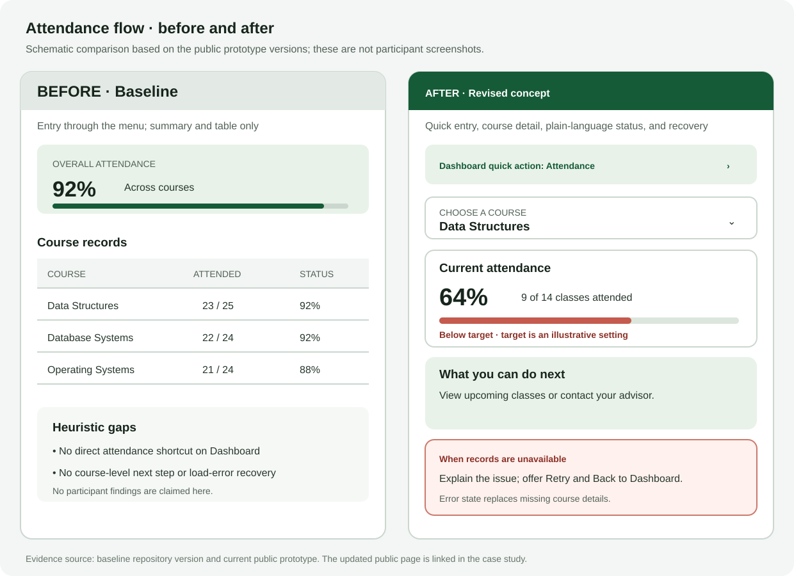

Project and user journey
Dashboard → Attendance → choose a course → understand the status → take a next step
Five usability tasks and success measures
| Task | Scenario | Success measure |
|---|---|---|
| 1 · Find attendance | Starting at the dashboard, find Data Structures attendance and say what the portal reports. | Finds the course and reports 64% and “Below target.” Target: ≤60 sec. |
| 2 · Check target | Check whether Database Systems is on track against the example target. | Finds 88% and interprets the visible status correctly. Target: ≤45 sec. |
| 3 · Recover | With the unavailable-record preview enabled, show how to recover. | Understands the error, retries, and sees course details return. Target: ≤45 sec. |
| 4 · Find timetable | From attendance details, find when Data Structures meets. | Opens the timetable and identifies a course time. Target: ≤60 sec. |
| 5 · Send feedback | Choose a term, give a rating, and submit a short non-personal comment. | Completes the form and sees the confirmation. Target: ≤90 sec. |
The original success goal was at least 2 of 3 unassisted completions per task, with zero critical errors. Times and detailed hesitation notes were not captured in these sessions.
Results from three testers
Only the outcomes below were recorded. “Completed” does not imply “unassisted” unless the notes explicitly say so.
| Task | P1 | P2 | P3 | Summary |
|---|---|---|---|---|
| 1 · Find attendance | Found | Found | Found | 3/3 found it. Hint use and time not recorded. |
| 2 · Check target | Needed hint | Needed hint | Needed hint | 3/3 needed a hint. Hint wording and point of confusion not recorded. |
| 3 · Recover | Not completed | Not completed | Not completed | 0/3 completed it. The specific blocker and time were not recorded. |
| 4 · Find timetable | Found | Found | Found | 3/3 found it. Hint use and time not recorded. |
| 5 · Submit feedback | Submitted | Submitted | Submitted | 3/3 submitted successfully. Hint use and time not recorded. |
No names, contact details, identifying quotes, elapsed times, exact hint wording, or reasons for difficulty were supplied. This small sample is directional and not representative of all HITAM students.
Before and after

Changes made from the findings
- Task 2: Attendance now explains that the example target is not confirmed HITAM policy and defines “at or above” versus “below.”
- Task 3: The error message names the recovery choices and makes Retry the primary action.
- Status is communicated with text as well as color, and the dashboard has a direct Attendance shortcut.
These are provisional changes. Because the exact confusion points were not captured, Tasks 2 and 3 need a follow-up test before claiming the changes solved the problems.
Priorities and next test
- Highest priority — Task 3: Watch where the recovery attempt stops, then refine the error guidance from that observation.
- High priority — Task 2: Ask what was unclear before offering a hint, then see if the added target explanation helps.
- Improve measurement: Record hint use and elapsed time for every task in future sessions.
- Verify policy: Confirm the real attendance threshold with HITAM before using the concept in production.
How the sessions were recorded
Participants were labeled P1, P2, and P3. Notes were limited to task outcomes and did not include personal details. The reported session notes were brief; no detailed action log or participant quotations were available, so none are invented here.
The moderator’s intended introduction was: “I’m evaluating the prototype, not you. Some content is sample data and nothing is sent to HITAM. Please think aloud as you go. You can stop at any time. I’ll take anonymous notes and won’t record your name or student details.”